Atividades Práticas Interdisciplinares de Extensão I • UNINASSAU Barreiras
A simulação fluorescente da contaminação cruzada
como método ativo de ensino em Barreiras-BA
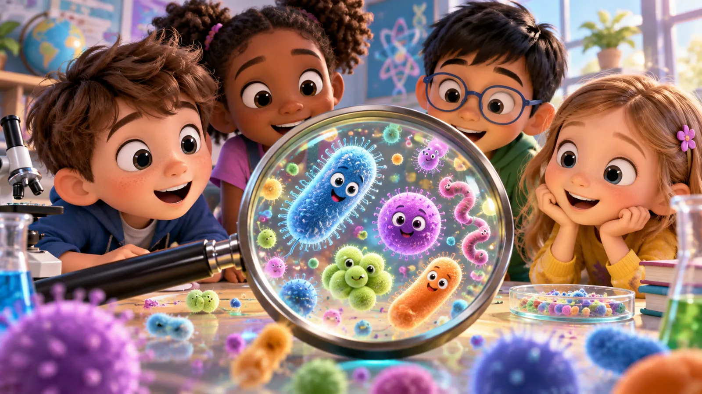
Charles Yure • Davidson Soledade • Iane Dias • Jeicy de Jesus • Kleber Alves • Marcos Vinicius • Maria Carminha • Thayama Rodrigues • Vinicius Francischini
Professora: Jainara Cristine Lima Leitão • 2026.2
Quem fez acontecer
Cada integrante assumiu uma frente: escrita, materiais, logística, compras, dinâmica e apresentação.
Roteiro
O problema, o contexto e os objetivos
Método ativo e materiais produzidos
Os três momentos na COOPEB
Números e o que observamos
Vídeo do dia da ação
Parte 1 — O projeto
Microrganismos estão em mãos, objetos e superfícies — e a criança não consegue vê-los, o que dificulta entender a contaminação
O contato transfere agentes contaminantes entre mãos, pessoas e objetos compartilhados do dia a dia escolar
É uma das medidas mais eficazes de prevenção de doenças — e um hábito que se forma na infância
98,3% das crianças de 6 a 14 anos estão na escola: espaço estratégico para educação em saúde
Tornar o invisível visível com uma simulação fluorescente, lúdica e segura.
Parte 1 — O projeto
159.734 habitantes (Censo 2022), polo do Oeste baiano — IDHM 0,721 e forte rede educacional
Cooperativa Educacional de Barreiras: rede privada, ~572 estudantes, do maternal ao ensino médio
2º ano do Ensino Fundamental — crianças de 7 a 8 anos, acompanhadas pela equipe pedagógica
Saneamento ainda é desafio na região: cerca de 9% da população usa fossas rudimentares — mais um motivo para educar em higiene desde cedo.
Parte 1 — O projeto
Objetivo geral: conscientizar os escolares sobre a presença e a disseminação de microrganismos no cotidiano e a importância da higienização correta das mãos.
Conceitos básicos de microbiologia e vias de transmissão
A contaminação cruzada entre mãos, objetos e superfícies
A técnica correta de higienização das mãos
Incentivar boas práticas na escola e em casa
O conhecimento antes e depois da intervenção
Parte 2 — A preparação
Slides lúdicos e perguntas — nunca aula expositiva pura: a criança participa o tempo todo
Loção que brilha na luz negra simula a contaminação — sem nenhum microrganismo real envolvido
Experimento com pó rosa comestível e lavagem real das mãos, com a turma como protagonista
Perguntas orais no início e no fim medem o que a turma já sabia e o que aprendeu
Base científica: estudos mostram que a concretização fluorescente melhora a adesão à higiene das mãos em escolares (Öncü et al., 2019; Goel & Chandrashekar, 2020).
Parte 2 — A preparação
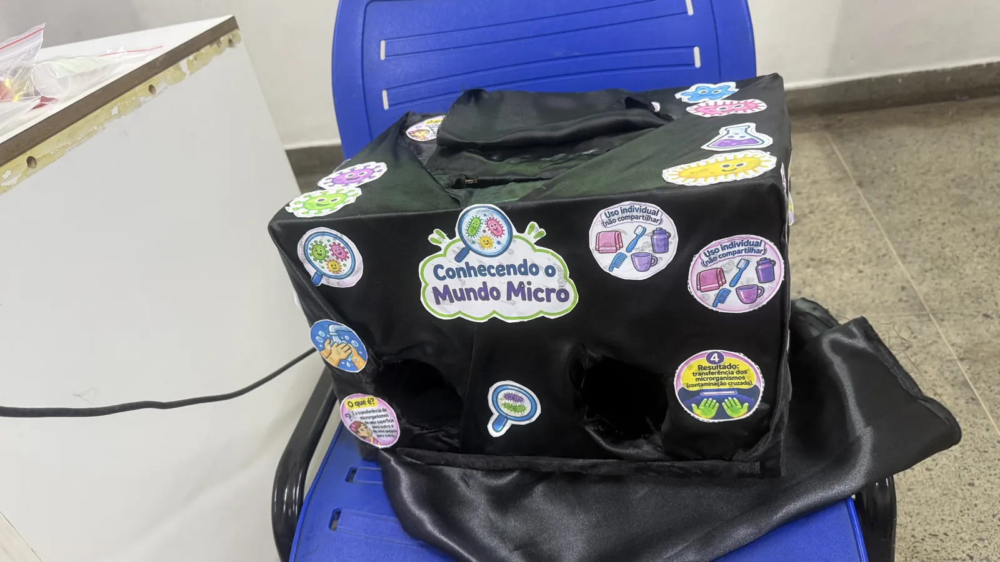
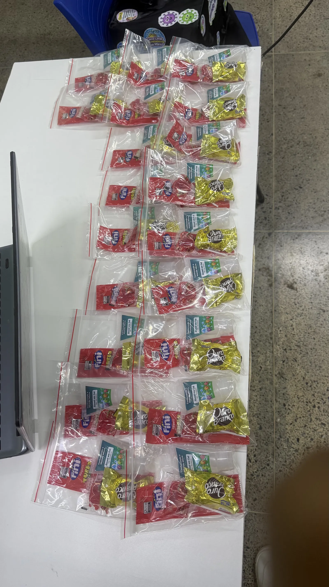
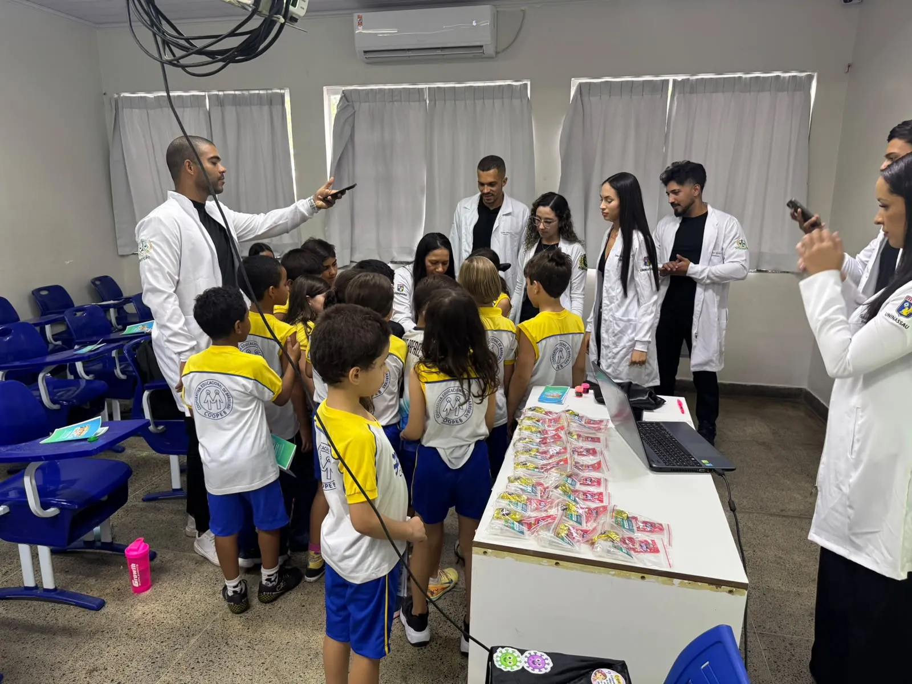
Personalizada com luz negra interna para o experimento
Própria para treinamento de higiene
Material didático sobre lavagem das mãos
Bombom, balas e álcool em gel de lembrança
Parte 3 — A intervenção
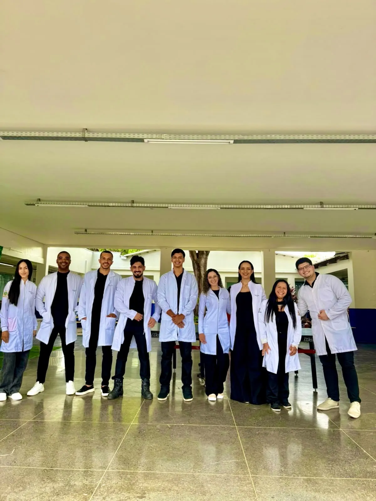
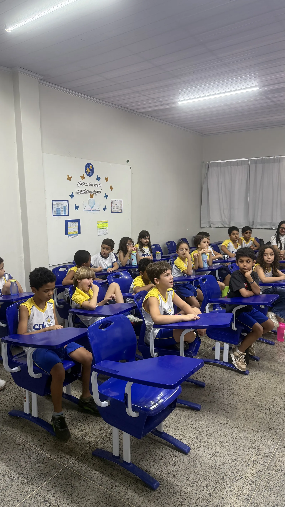
Parte 3 — A intervenção
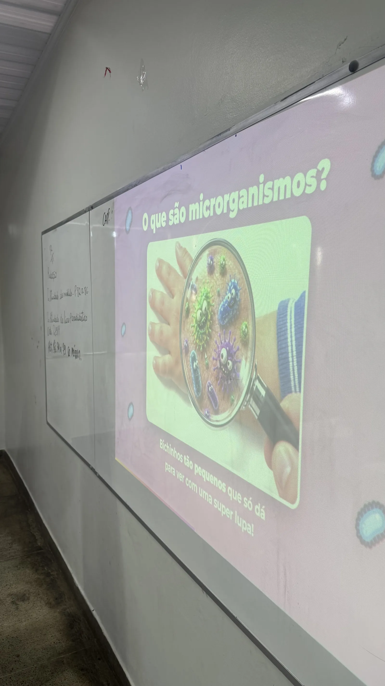
Perguntamos o que são microrganismos e bactérias e para que serve o microscópio — e a turma surpreendeu, respondendo muito bem
Com a base boa, avançamos da teoria para a aplicação prática — exatamente o que um método ativo permite fazer
Parte 3 — A intervenção
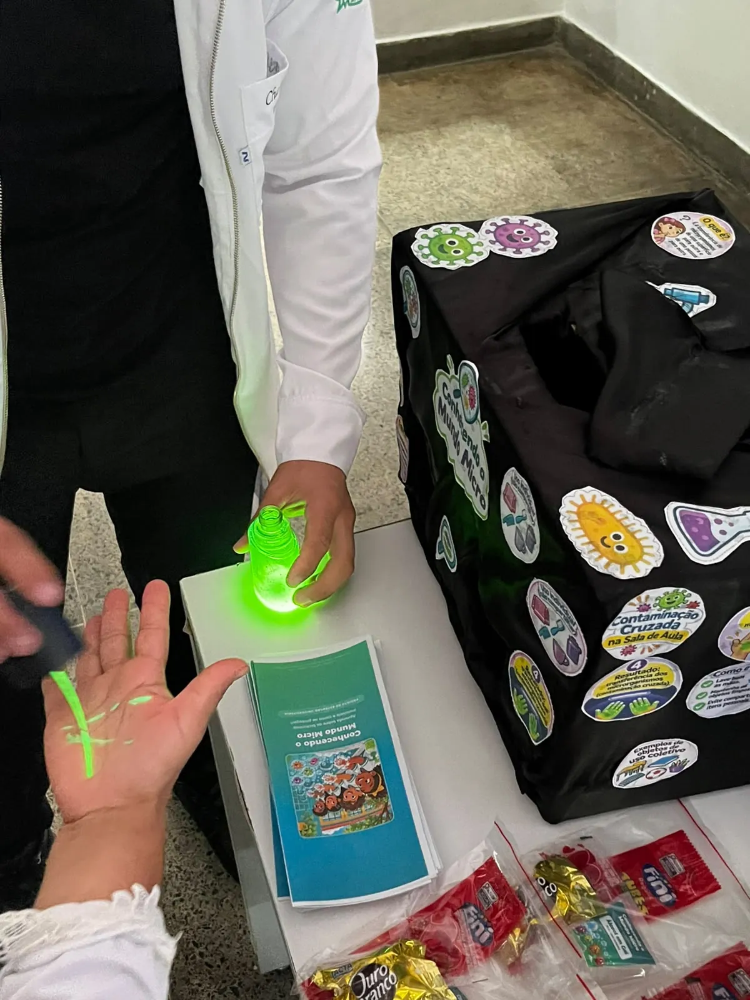
A loção fluorescente passou de mão em mão e de objeto em objeto — e, dentro da caixa escura, as crianças viram com os próprios olhos o caminho da contaminação cruzada. Sempre esclarecendo: o brilho simula, não detecta microrganismos reais.
Parte 3 — A intervenção
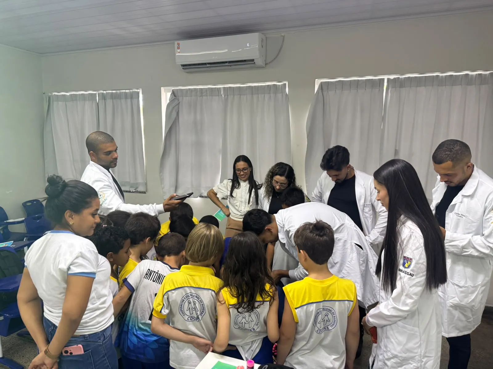
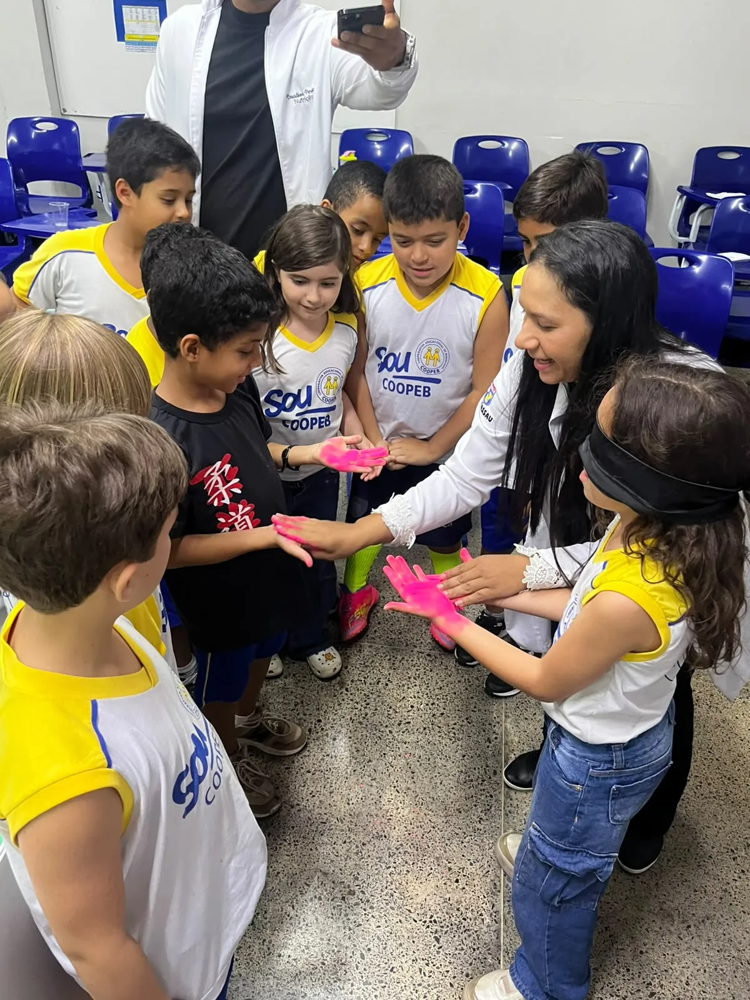
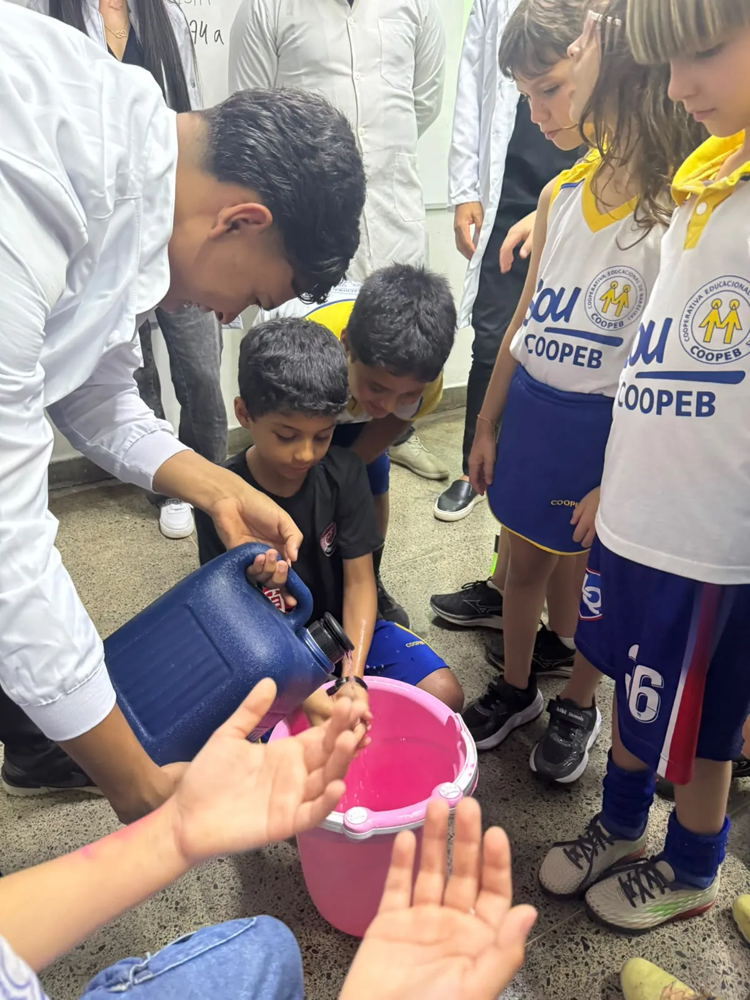
Uma voluntária, de olhos vendados, lavou as mãos como faz em casa. O pó rosa mostrou o resultado:
boa técnica geral — e a deixa perfeita para reforçar unhas, pontas dos dedos e espaços entre os dedos.
Parte 3 — A intervenção
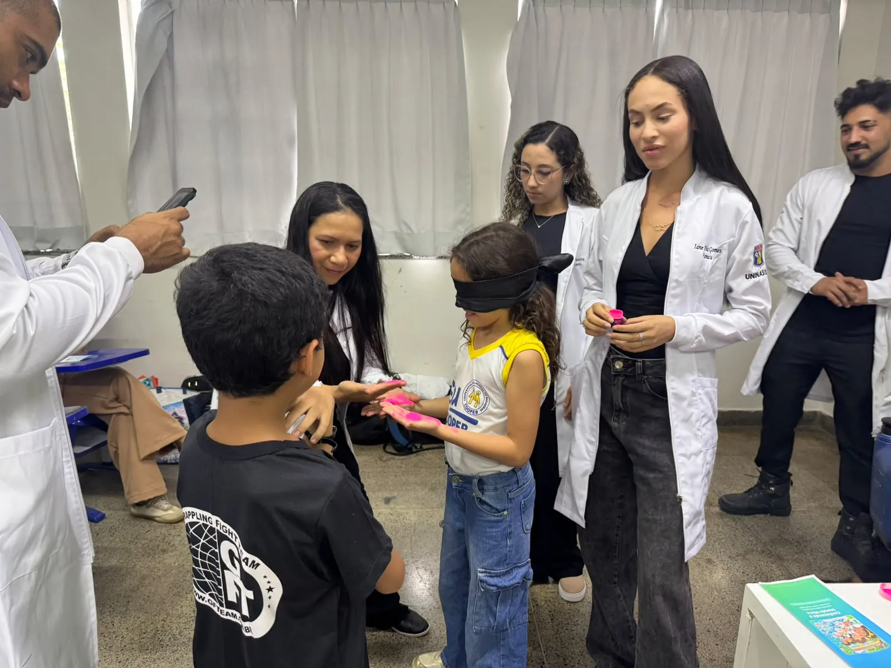
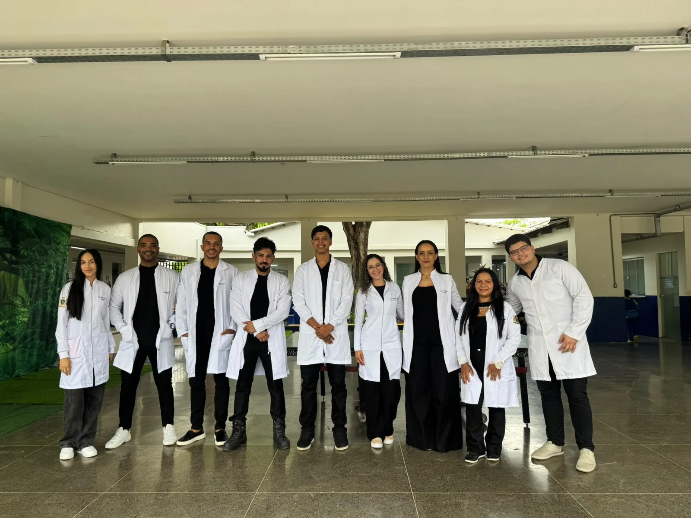
No fim, as perguntas vieram delas: "qual o tamanho de um micróbio?", "dá pra matar esfregando?", "o sabonete é seguro?"
Curiosidade científica genuína, respondida em linguagem acessível — e cada criança levou folder e kit com álcool em gel.
Parte 4 — Resultados
Uma atividade, uma instituição beneficiada — e uma turma inteira que agora sabe explicar por que lavar as mãos importa.
Parte 4 — Resultados
As crianças responderam, perguntaram e disputaram espaço para participar das dinâmicas
A sondagem inicial mostrou conhecimentos prévios sólidos — a abordagem subiu de nível na hora
Perguntas espontâneas sobre tamanho de microrganismos e segurança dos produtos de higiene
Autocuidado reforçado e hábitos levados para casa — a essência da extensão universitária
Parte 4 — Resultados
Adaptar microbiologia e biossegurança para a linguagem de crianças de 7 anos é um exercício raro — e transformador
9 pessoas, 4 cursos, uma só entrega: divisão de papéis, escuta ativa e organização
Responder perguntas espontâneas exige domínio do conteúdo e capacidade de improviso
A formação ganha sentido quando o conhecimento sai do campus e chega à comunidade
Linha do tempo
Planejamento e pré-projeto
Contato com a COOPEB e ajustes da proposta
Produção dos materiais e entrega acadêmica do projeto
Testes, logística e a intervenção em 12/11
Avaliação dos resultados, relatório final e esta apresentação
Cada etapa cumprida dentro do cronograma proposto no projeto.
Parte 5 — O registro
Conhecendo o Mundo Micro • 2026.2
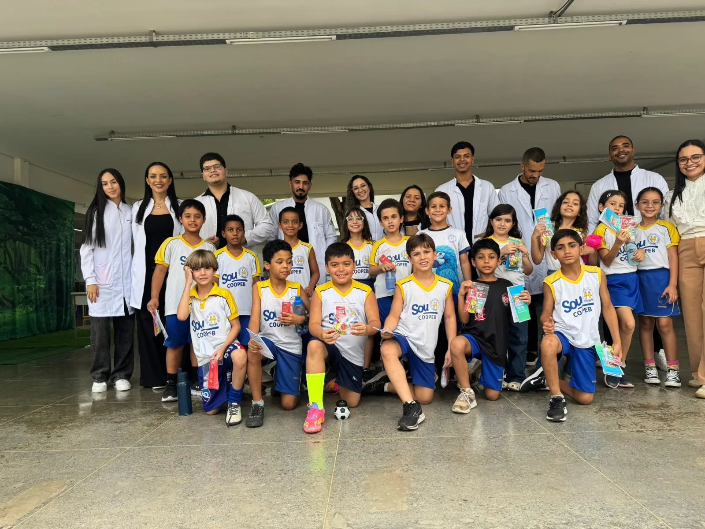
Referências: Öncü et al. (2019) • Goel & Chandrashekar (2020) • ANVISA (2026) • OMS/UNICEF (2025) • IBGE (2022)
Extensão é isso: a universidade de mãos dadas com a comunidade.